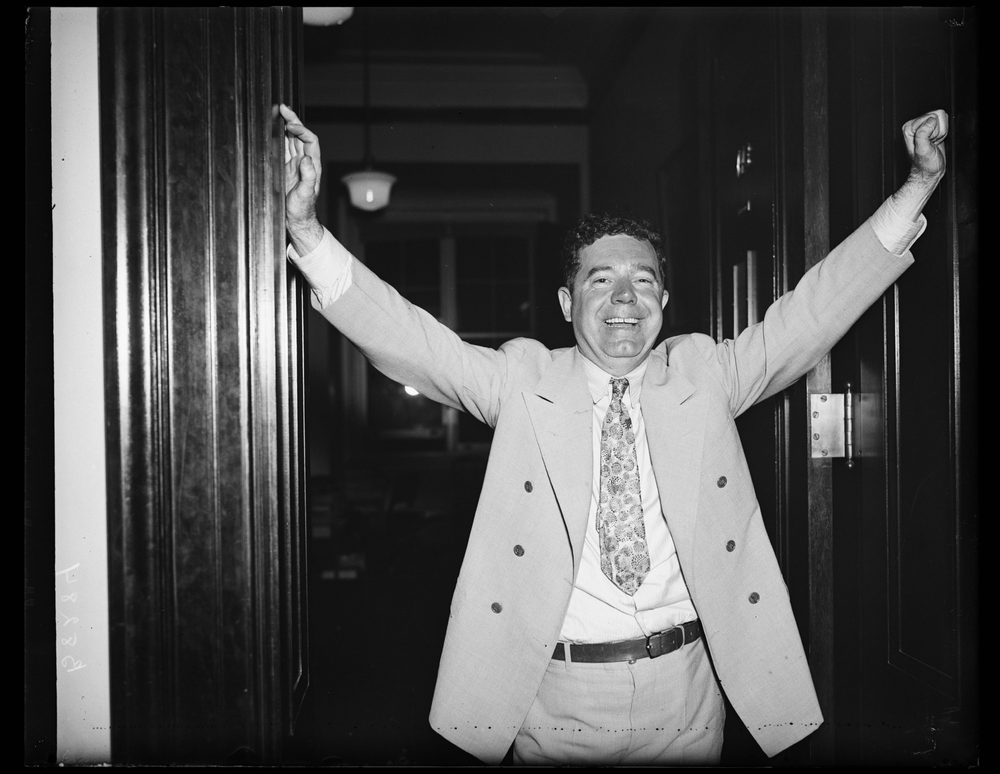

Directions: Study the photograph and the syllabus lines, then answer the questions.

Background. Long announced the Share Our Wealth Society in a radio address on February 23, 1934. His plan capped large fortunes to guarantee every family wealth of around $5,000, with an old-age pension of thirty dollars a month. Dr. Francis Townsend's plan proposed two hundred dollars a month to every citizen over sixty who retired and spent the payment within the month.
Syllabus lines. From the syllabus of Schechter Poultry Corporation v. United States (1935): "Extraordinary conditions, such as an economic crisis, may call for extraordinary remedies, but they cannot create or enlarge constitutional power. ... Congress is not permitted by the Constitution to abdicate, or to transfer to others, the essential legislative functions with which it is vested."
1. The photograph shows Long at the height of his national campaign in the last weeks of his life. What had he built outside the Senate that made him dangerous to Roosevelt, and what was its name?
2. A Townsend club member and a Share Our Wealth member both say the New Deal has failed the old. State each man's pension figure and one condition or funding feature that separates the two plans.
3. The government defended the poultry code in part by pointing to the economic emergency. Which sentence of the syllabus answers that defense, and what does it say?
4. Explain, in one or two sentences, how the second syllabus sentence destroyed the National Recovery Administration's code system.
1. What had Long built outside the Senate, and what was its name? The Share Our Wealth Society, announced in his radio address of February 23, 1934: a national network of local clubs claiming millions of members, organized around his program rather than around the Democratic Party. It made him dangerous because it gave a sitting senator an independent national following and a platform for a possible challenge to Roosevelt in 1936. (Blueprint 9)
2. State each pension figure and one separating feature. Long proposed thirty dollars a month in old-age pension, as one part of a plan funded by capping large fortunes, beside a guaranteed family wealth floor of around $5,000. Townsend proposed two hundred dollars a month to every citizen over sixty, on condition the pensioner retire and spend the whole payment within the month. Credit requires both figures and one accurate separator: amount, source of funds, or the spending condition. (Blueprint 9)
3. Which syllabus sentence answers the emergency defense, and what does it say? The first sentence. Extraordinary conditions may call for extraordinary remedies, but they cannot create or enlarge constitutional power. The emergency therefore could not expand what Congress and the president were permitted to do. (Blueprint 10)
4. How did the second sentence destroy the code system? It held that Congress may not hand its essential legislative functions to others. The Recovery Act had let the president approve codes of fair competition for whole industries without Congress laying down the policy and standards, so the codes rested on a transfer of the lawmaking power itself and fell with the act. (Blueprint 10)
Teacher note. This check is formative. Question 2 is the discriminator between the two pension movements, which students most often merge into one. Question 3 predicts success on the writing task, because it requires reading a holding as an answer to an argument.